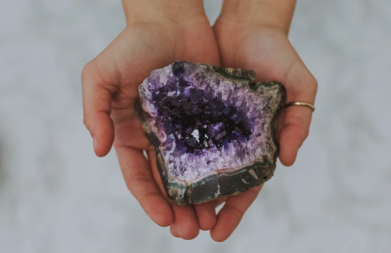
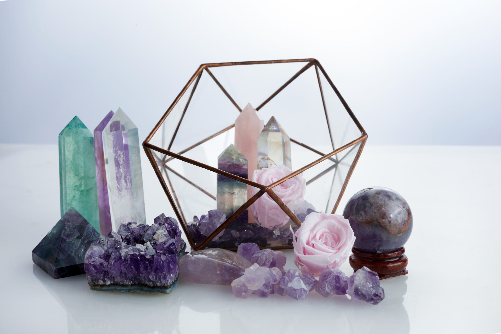

GEMOTERAPIA
La gemoterapia se basa en la utilizacion de las capacidades de las piedras semipreciosas para la absorsion de malas energias, la atraccion de buena, las protecciones y mas
REGISTROS AKASHICOS
Los registros akashicos funcionan como una conversacion mediada entre tus guias espirituales y vos, yo actuare como mediador entre ambas partes y respondere preguntas que previamente haces

TAMEANA
Tameana es una tecnica utilizada para llegar a un estado de frecuencia y experimentarlo en tus sueños, se realiza cuando el paciente este dormido, se puede hacer de forma remota o presencial